← HomeDesign, Reporting & Appraisal →LATEST SCIENCE
One clinical concept a week, from a real paper
Every Saturday, one new clinical paper and one lesson for practice: what it means for the therapeutic approach and for the patient, never a lesson on study design or reporting. Swipe through the slides here, no Instagram account needed.
No «Latest Science» post yet: check back next Saturday.